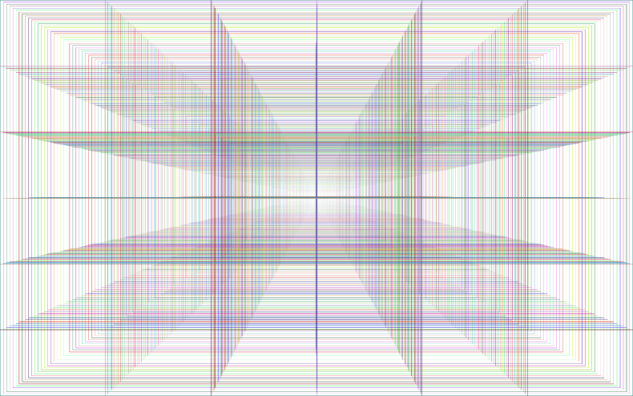

Energy is the capacity to do work.
Work is any action that is done in an attempt to change the configuration of a system against a force that opposes such a change in that system. Gravitional, heat, kinetic, elastic, electric, chemical, nuclear, mass and radiant arr all the different forms of energy. We see this phenomena manifest itself in unique distinguishable ways therfore it is difficult for the human mind to resolve this idea into a singular entity, None the less, we know that it is omnipresent in pur world and pervades every aspect of our human lives. No interactions, cosmic or micro can take place without the conversion of energy from one of its forms to another.
Our first exosomatic energy conversion began when homosapien ancestors discovered and tamed the phenomna of the flame. Fire allowed us to cook otherwise inedible wild meat, keep warm and defend ourselves against more fiersome predators. Mainly our fuel for fire was wood but the discovery of fossil fuels changed our world completly. Our ancestors discovered that there was an enormous amount of energy stored in the presurized hydrocarbons of once living plants and animals.